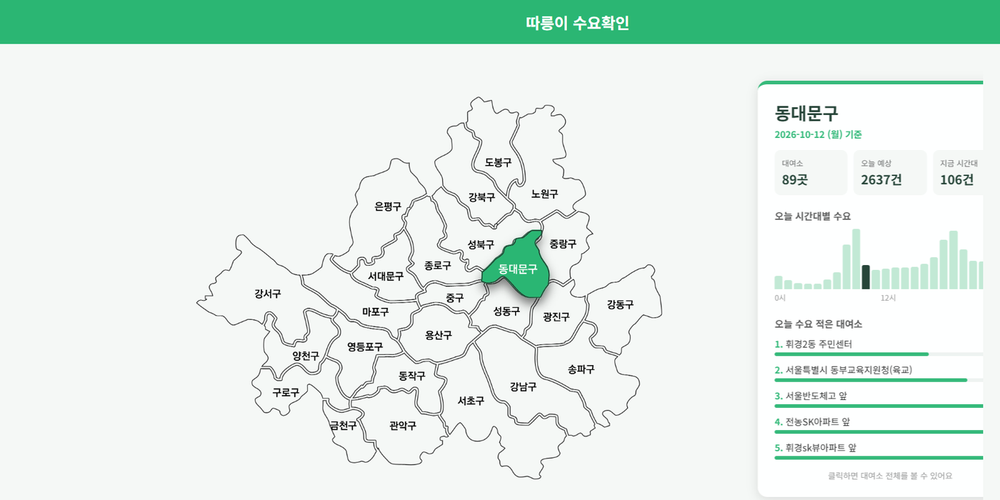
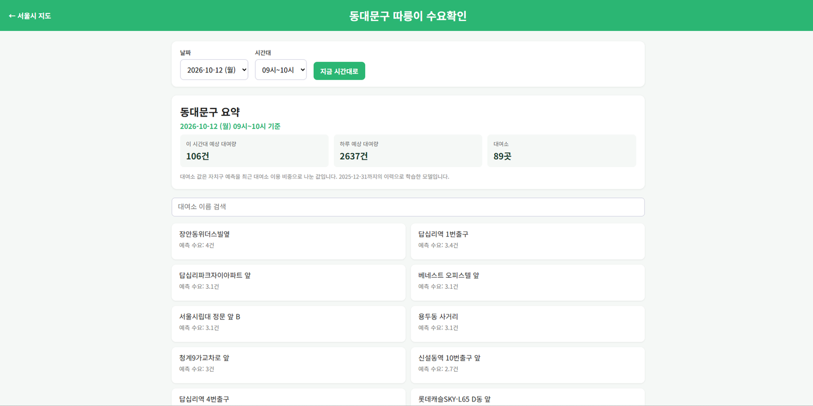
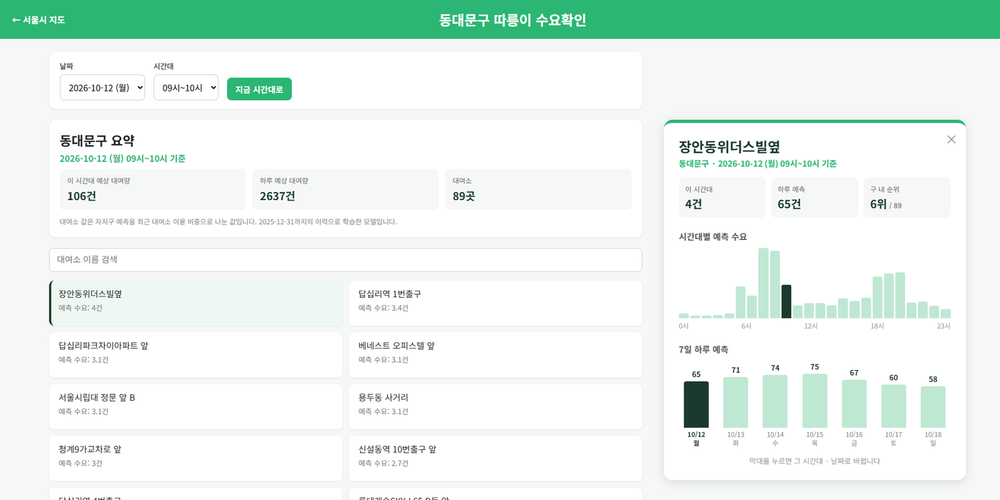

수요는 지역·시간대·요일·날씨에 따라 크게 달라집니다. 부족한 곳과 넘치는 곳이 같은 시간에 공존합니다.
"자전거가 한 대도 없었어요."
"같은 시간인데 어떤 대여소는 항상 붐벼요."
"미리 수요를 알 수 있다면 재배치도 더 효율적이지 않을까?"
데이터 규모, 오프라인 시험 성능, 웹 제공 범위입니다.
2020~2025 대여 기록 · 25개 자치구
2025년 시간 MAE 감소 (지난주 같은 시간 대비)
웹에서 확인하는 예측 기간
수집부터 서비스까지의 흐름입니다.
발견한 패턴을 모델이 쓸 수 있는 변수로 바꿨습니다.
| 발견한 패턴 | 모델 변수 |
|---|---|
| 봄·가을 정점, 1~2월은 연평균의 32~63% | 월 |
| 주말은 평일의 0.75배, 공휴일은 0.59배 (2025) | 요일, 주말, 공휴일, 쉬는 날 |
| 8시·18시에 수요 집중 | 시간, 출퇴근 시간, 같은 시간 평균 |
| 자치구마다 수요 차이 | 자치구 코드 |
| 비·기온 등 날씨에 따라 변동 | 강수량, 기온, 일교차, 미세먼지 |
2024년 검증 결과입니다. 값이 낮을수록 좋습니다.
| 모델 | 시간 MAE | 하루 MAPE (%) |
|---|---|---|
| 그래디언트 부스팅 (HGB) · 최종 선택 | 25.78 | 16.57 |
| 랜덤포레스트 | 26.04 | 17.51 |
| 선형회귀 (Ridge) | 37.53 | 25.02 |
| 기준 모델 (지난주 같은 시간) | 44.76 | 43.01 |
날씨를 넣으면 시간 MAE가 31.71에서 25.78로 줄었습니다.
실제 사용 화면입니다. 이미지를 누르면 크게 볼 수 있습니다.



현재 웹은 실시간 재고, 예보 날씨, 최근 대여 이력을 자동으로 가져오지 않습니다.
배포 모델의 시간별 오차, 예보 날씨를 넣은 미래 예측
실시간 재고와 거치대 용량, 차량 적재량·이동 시간
부족 시간 감소 측정, 작업 이동거리·비용 비교
기상 전처리 · 모델 학습·검증 · 웹 구현
이력 통합 · 시간별 분석 · 예측 함수 정리
월별 시각화 · 시간대 정보 · PPT·발표
요일 분석 · 가용수량 전처리 · 발표 웹
결과 보고서와 작업일지를 내려받을 수 있습니다.